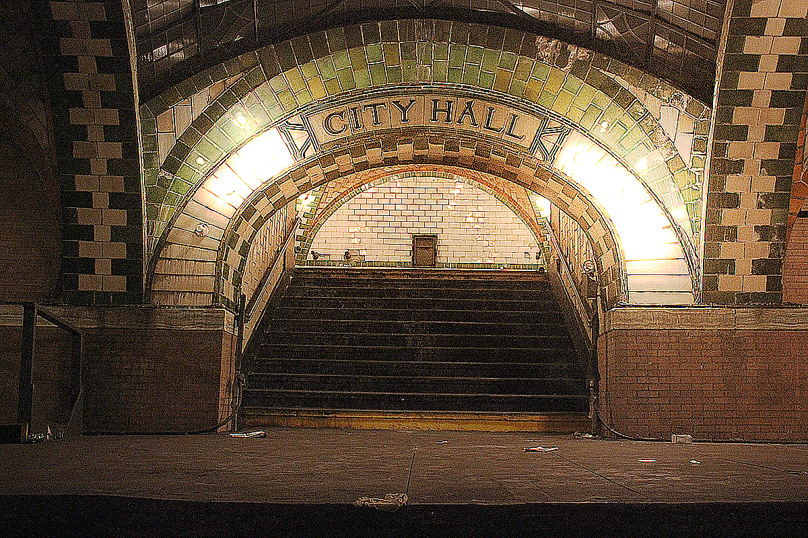
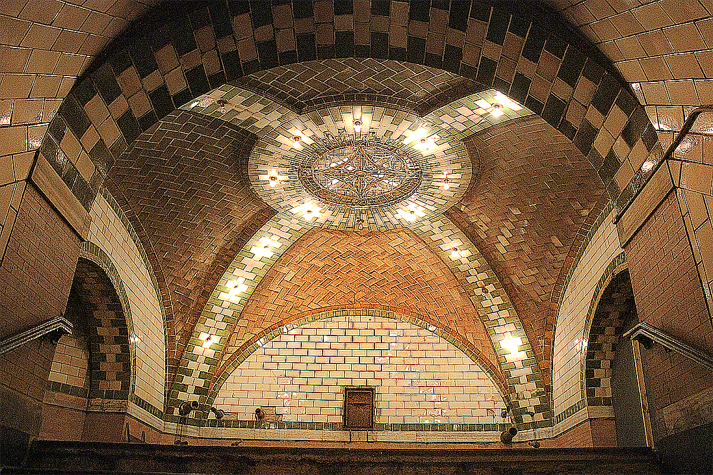
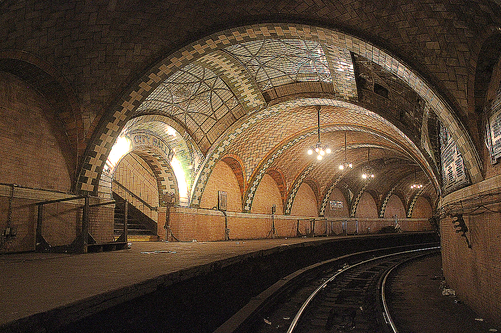

Take the 6 train to the Brooklyn Bridge/City Hall station (the last stop, if you're heading south), but don't get off. The train will turn around the City Hall station loop, which will give you a one-of-a-kind view of the otherwise unreachable location
City Hall New York, NY 10007